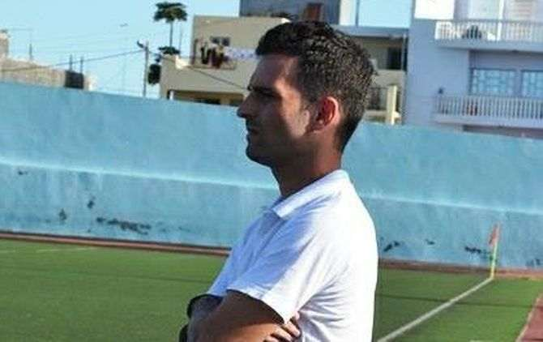
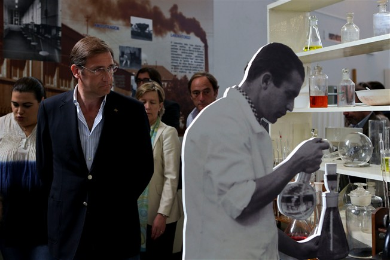

O treinador português Joel de Castro, que conquistou o título de campeão regional da ilha do Fogo, pelo Spartak, vai orientar o Boavista da Praia, vice-campeão de Cabo Verde e campeão regional de Santiago Sul.
O presidente do PSD e primeiro-ministro, Pedro Passos Coelho, afirmou, no Barreiro, que Portugal tem o "cofre devidamente apetrechado" para pagar os empréstimos aos credores, mesmo em caso de volatilidades do mercado.
A Europeia sofreu o embate da queda de quase 20% da Volskwagen. A bolsa de Frankfurt perdeu quase 4%.